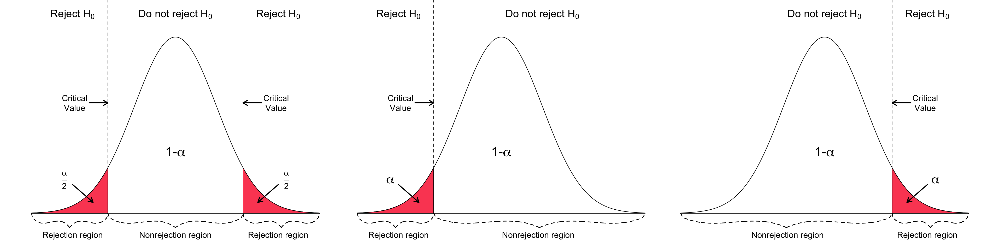

Chcemy sprawdzić, czy średnia populacji \(\mu\) jest równa pewnej przyjętej wartości \(\mu_0\).
sprawdzamy założenia testu
tworzymy hipotezę dwustronną:
hipoteza zerowa: średnia populacji jest równa przyjętej wartości (\(H_{0}: \mu = \mu_{0}\))
hipoteza alternatywna: średnia populacji nie jest równa przyjętej wartości (\(H_{0}: \mu \neq \mu_{0}\))
Ustalenie hipotezy statystycznej:
Słownie: “Średnia populacji różni się od przyjętej średniej” (Obejmuje hipotezę alternatywną)
Wyrażeniem: \(H_0: \mu = \mu_0\) versus \(H_A: \mu \neq \mu_0\)
Jako hipotezę zerową przyjmujemy tę której prawdziwość poddajemy w wątpliwość i którą chętniej jesteśmy skłonni odrzucić, jeśli tylko znajdziemy mocne uzasadnienie.
Ważniejsza jest dla nas hipoteza alternatywna, ponieważ celem większości analiz i badań jest odrzucenie hipotezy zerowej na korzyść przyjęcia alternatywnej. Hipoteza alternatywna może być:
dwustronna: \(H_A: \mu \neq \mu_0\)
lewostronna: \(H_A: \mu < \mu_0\)
prawostronna: \(H_A: \mu > \mu_0\)
12.3 Testowanie hipotez: rozdzaje błędów
błąd I rodzaju - odrzucenie hipotezy zerowej, wtedy gdy jest ona prawdziwa
błąd II rodzaju - nie odrzucenie hipotezy fałszywej
12.4 Testowanie hipotez: p-value
p-value - poziom istotności testu
Prawdopodobieństwo popełnienia błędu I rodzaju: wskazuje jak często popełnimy błąd, odrzucając daną hipotezę zerową, mimo, że jest ona prawdziwa (prawdopodobieństwo popełnienie tzw. błędu I rodzaju).
im mniejsza wartość poziomu istotności, tym mniejsza szansa, że \(H_0\) jest prawdziwa
najczęściej przyjmowane wartości: 0.05, 0.01, 0.001. Np. poziom istotności 0,05 oznacza, że jesteśmy skłonni popełnić taki błąd 5 razy na 100 badań.
Co oznacza poziom istotności 0,01, a co poziom istotności 0,001?
12.5 Testowanie hipotez: określenie wyniku testu
Odrzucamy hipotezę zerową na korzyść hipotezy alternatywnej, gdy p-value jest mniejsze od przyjętego poziomu (tj. mniejsze od 0.05 lub 0.01 lub 0.001)
Nie udaje się nam odrzucić hipotezy zerowej (Nigdy nie akceptujemy hipotezy zerowej!)
Wynik statystycznie istotny oznacza, że różnica uzyskana w eksperymencie jest większa od tej, która może wynikać jedynie z przypadku
12.6 Testowanie hipotez: obszar krytyczny
obszar znajdujący się zawsze na krańcach rozkładu.
Jeżeli obliczona przez nas wartość statystyki testowej znajdzie się w tym obszarze, to weryfikowaną przez nas hipotezę \(H_0\) odrzucamy i przyjmujemy hipotezę alternatywną.
Wielkość obszaru krytycznego wyznacza dowolnie mały poziom istotności \(\alpha\) , natomiast jego położenie określane jest przez hipotezę alternatywną.

Jeśli obliczona na podstawie próby wartość statystyki nie należy do obszaru krytycznego, to stwierdzamy, że nie mamy podstaw do odrzucenia hipotezy zerowej. Nie odrzucenie hipotezy zerowej nie dowodzi jej prawdziwości. Stąd wniosek, że hipoteza zerowa może, ale nie musi, być prawdziwa, a postępowanie nie dało żadnych dodatkowych informacji uprawniających do podjęcia decyzji o przyjęciu lub odrzuceniu hipotezy zerowej.
12.7 Testowanie hipotez - alternatywnie
Hipoteza zerowa (obrońca)
Hipoteza alternatywna (oskarżyciel)
Odrzucenie hipotezy zerowej (winny)
Niemożność odrzucenia hipotezy zerowej (niewinny)
p-value (prawdopodobieństwo, że prawdziwie niewinny zbiór danych będzie wyglądał jak winny).
12.8 Testowanie hipotez - przykład
Nieobciążona moneta powinna dawać 15 reszek w 30 rzutach. Rzucamy monetą 30 razy z czego 22 otrzymujemy reszkę. Czy to oznacza, że moneta jest obciążona? A może jest to przypadek?
Sformułowanie hipotez statystycznych
\(H_0:\) Moneta nie jest obciążona, ten wynik jest tylko przypadkiem
Warning: The dot-dot notation (`..density..`) was deprecated in ggplot2 3.4.0.
ℹ Please use `after_stat(density)` instead.
ggplot(df, aes(reszka, y = ..density..)) +geom_histogram(binwidth =1) +geom_vline(xintercept =22, color ='red')
prob =pbinom(21, 30, 0.5, lower.tail =FALSE)prob
[1] 0.008062401
Prawdopodobieństwo równe 0,8% (więc \(p=0,008\)), że moneta nie jest obciążona.
W efekcie odrzucamy \(H_0\) i przyjmujemy \(H_A\) ponieważ p (obliczone przez nas prob) jest mniejsze od przyjętego progu 0,05.
Dane zawierają pomiary temperatur dla wybranego obszaru. Naszym zadaniem jest sprawdzenie, czy średnia temperatura będzie równa 8C, przy założeniu poziomu istotności 0,01. Sformułuj hipotezę zerową oraz hipotezy alternatywne (dwustronne, lewostronną i prawostronną). Co oznacza, poziom istotności 0,01?